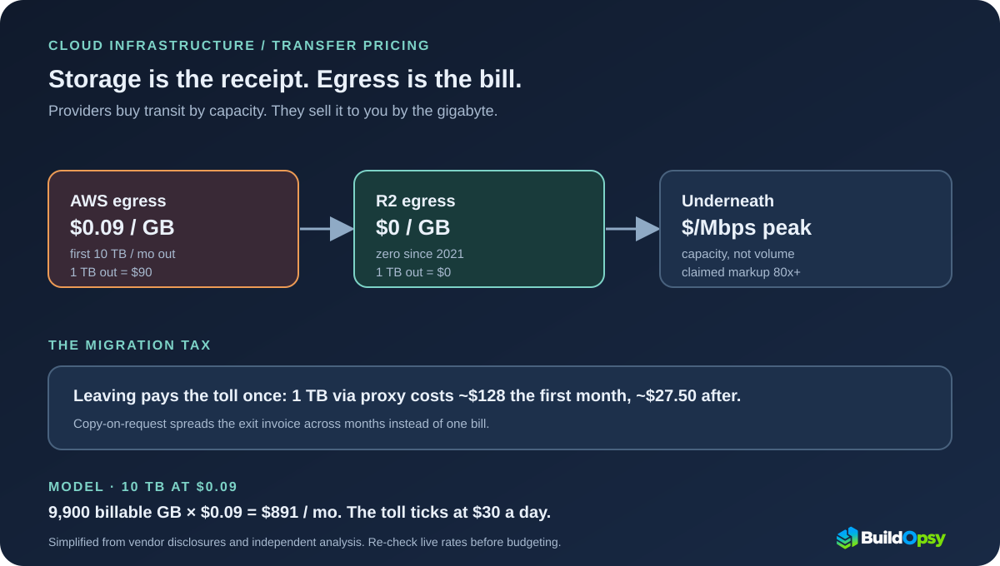

1. The Announcement That Named the Tax
On September 28, 2021, Cloudflare announced R2 object storage with three properties that read like an indictment: full S3 API compatibility, storage at $0.015 per GB-month, and zero egress fees. CEO Matthew Prince said cloud storage had attracted developers with cheap ingress and then locked them in with exorbitant egress, calling the fees "nothing but a tax on developers." The product was the argument: identical API, a third cheaper storage, and the tollbooth removed.
The move extended a campaign Cloudflare had started in 2018 with the Bandwidth Alliance — providers mutually waiving transfer fees — and it landed: R2 reached general availability in September 2022 with customers like Vecteezy reporting existing egress bills in the six figures a year. Whether or not you buy Cloudflare's framing, the numbers below are worth pricing yourself, because the toll applies to every gigabyte your architecture serves to the internet.
2. Anatomy of the Toll: Volume Prices on Capacity Costs
Here is the mechanism the tollbooth hides. Network operators buy transit by capacity — dollars per peak megabit per month, a flat pipe price — while cloud providers sell it by volume, cents per gigabyte transferred. Cloudflare's analysis argues the spread between those two numbers reaches 80x or more in the US, and notes the industry's open secret: most hosting providers already discount or waive egress toward peers, so the underlying bandwidth often costs the provider little or nothing incremental.
AWS's side of the ledger is tiered but unrelenting: about $0.09 per GB for the first 10 TB a month out to the internet, stepping down with volume to around $0.05 past 150 TB, with the first gigabyte free and a 100 GB monthly allowance shared across services. R2's side is one line: $0 per GB out, $0.015 per GB-month stored. Same S3 API, same objects, different theory of what the customer should pay for. The storage side of the same S3 bill is modeled line by line in the S3 pricing model.

3. Worked Math: From One Terabyte to Fifty Grand
Take the independent worked example from Last Week in AWS's 2021 analysis. One terabyte served from S3: $90 in egress and $23 in storage. Serve it through an R2 migration proxy instead — paying AWS $0.09 once to move each byte, both storage fees during the copy — and the first month totals about $128, falling to roughly $27.50 a month thereafter as repeat requests serve from R2. The migration pays for itself the second month at this volume, which is exactly why the toll exists: without it, leaving would be free.
At scale the numbers stop being rounding errors. The same analysis cited an analysis pricing a large all-AWS egress footprint at $53,891.16 (reported figure from that analysis, inputs and period unstated here) in transfer for the period — a five-figure line item for moving your own bytes to your own users. The calculator's default model keeps it current-shaped: 10,000 GB at $0.09 minus the 100 GB allowance bills $891 a month, $30 a day, ticking whether or not anyone looks at the dashboard. Egress is the rare cloud line that grows with success and can only be cut by architecture, never by usage discipline alone.
4. Why Leaving Costs One Last Toll
The cruelest property of egress pricing is that it taxes the escape. Migrating a terabyte out of S3 means paying the $0.09 toll on every byte exactly once — Cloudflare's S3-migration proxy exists precisely to pay it incrementally, copying objects on first request so the bill spreads across months instead of landing as one exit invoice. Design lesson: the cheapest migration is the one that never finishes all at once.
Providers with private backbones and peering depth pay least for the underlying transit, which is why the same gigabyte costs different amounts in different clouds and regions. Model egress per destination path, not as one global rate: US East internet egress, cross-region replication, and CDN-origin pulls each ride different tiers and allowances. The calculator models one path at a time for exactly this reason — blend paths and the average lies.
5. What to Steal
First, serve hot bytes from where egress is zero or cheapest. CDN cache-hit ratio is an egress lever before it is a latency lever: every cached gigabyte is a gigabyte never tolled. Price the cache with the cache savings calculator and watch egress fall as a side effect.
Second, keep cold bytes where the toll never applies. Archives, backups, and infrequently read objects belong in storage with no retrieval tax, not beside the hot path. Lifecycle rules are egress policy wearing a storage costume.
Third, count egress per path per month and alert on slope. Gigabytes per day times tier rate, tracked against commit, turns the tollbooth into a metric the on-call owns — the same ingest-slope discipline as log pipelines.
Fourth, negotiate or migrate with the toll itemized, not bundled. A renewal conversation that names the egress line separately gets a different answer than one that waves at the total. And a migration plan that amortizes the exit toll across months beats one that pays it upfront.
Fifth, design multi-cloud reads, not multi-cloud writes. One authoritative copy and cheap or free reads everywhere beats two writable copies syncing across tolled links. Data gravity is just egress with patience.
If the line you need to price is CDN bandwidth and request charges rather than cloud egress, run the CDN Cost Calculator.
6. The Postmortem Verdict
Three clocks ran in this story: the 2021 announcement named the tax, the 2022 general availability proved customers would switch for it, and every invoice since has confirmed the tollbooth is load-bearing for provider margins. Treating egress as a pass-through cost misses the mechanism — it is the mechanism, the single line that converts stored bytes into switching costs.
The disclosure that matters is not any single rate but the pricing shape: capacity bought, volume sold, markup banked. Until your architecture prices the tollbooth per path and serves hot bytes from behind it, every growth chart is also an egress chart. R2 proved the toll is optional. Your bill proves whether you noticed.
Storage is the receipt. Egress is the bill.
Sources and Method
R2 terms, dates, storage pricing, and executive quotes come from Cloudflare's 2021 announcement and 2022 GA release. Transit-vs-volume economics and the 80x markup figure are Cloudflare's stated analysis. Tiered AWS figures and worked migration math come from Last Week in AWS's October 2021 analysis; treat all 2021 rates as reported, and re-check live pricing before budgeting. The $891 model is the default output of the linked Buildopsy calculator.
- Cloudflare: R2 Storage announcement with zero egress (Sep 28, 2021)
- Cloudflare Blog: Introducing R2 Object Storage (Sep 28, 2021)
- Cloudflare: Trading egress for opportunity, transit economics (Jun 7, 2023)
- Last Week in AWS: The Compelling Economics of Cloudflare R2 (Oct 6, 2021)
- Cloudflare: R2 general availability with Vecteezy quote (Sep 21, 2022)
- Buildopsy: AWS S3 pricing model — the storage side of the same bill